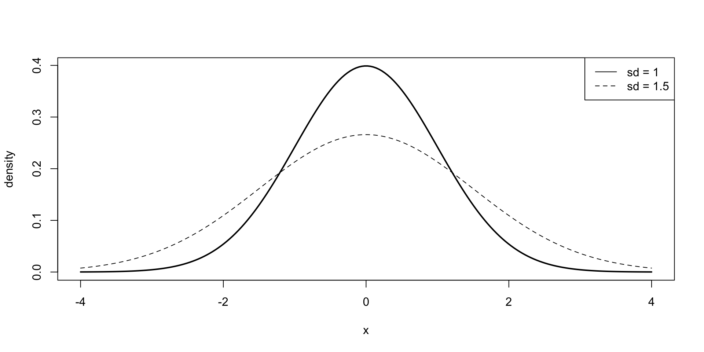
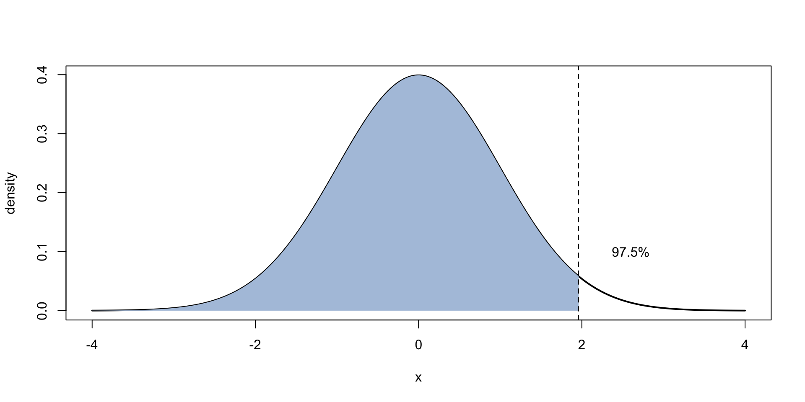
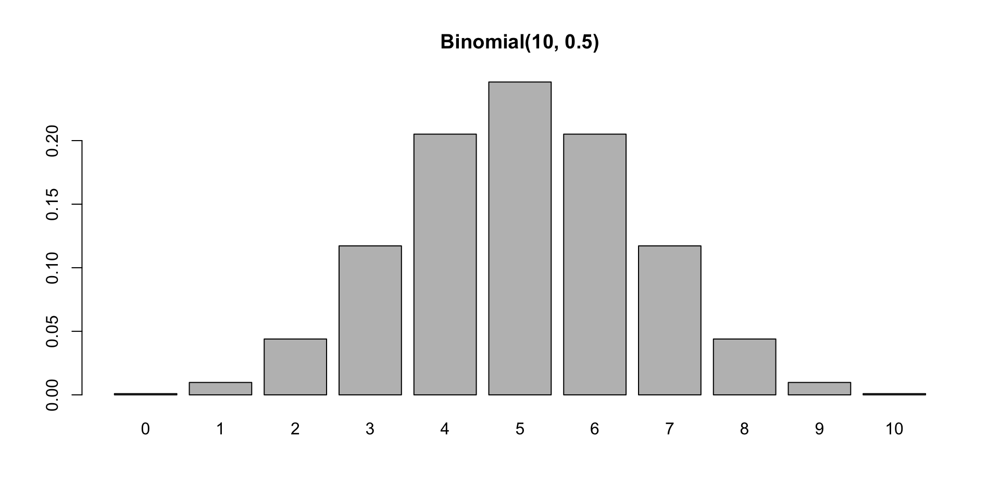

[1] 0.3989423[1] 0.9750021[1] 1.959964[1] -0.6264538 0.1836433 -0.8356286第十七章：機率分布
實踐大學
2026-06-07
對每個分布 xxx，R 提供四個函式：
| 字首 | 函式 | 回答的問題 |
|---|---|---|
d |
密度／質量 | 值 \(x\) 出現的可能性多大？ |
p |
累積分布 | \(P(X \le q)\)？ |
q |
分位數 | 哪個值以下累積了機率 \(p\)？ |
r |
隨機生成 | 給我 \(n\) 個隨機值 |
\[f(x) = \frac{1}{\sigma\sqrt{2\pi}}\, e^{-\frac{(x-\mu)^2}{2\sigma^2}}\]

mean= 平移、sd= 伸縮；預設值就是標準常態。
著色面積就是 pnorm()；qnorm() 是反向查表：

同一套四字母模式涵蓋所有經典連續家族：
[1] 0.5[1] 0.6321206[1] 0.9750018[1] 0.9499565[1] 0.9729927t、chisq、f 是第十八章檢定的主力——它們的 q 函式就能生成你以前在附錄查的臨界值表。lnorm、gamma、beta、weibull、cauchy 等等。[1] 0.1171875[1] 0.9453125[1] 0.180447[1] 0.128[1] 0.2181818
[1] 4 3 1 2 3[1] "H" "H" "T" "T" "T"Tip
作業與報告永遠先 set.seed()。 偽隨機序列從種子出發完全可重播，閱卷者——以及未來的你——才能一字不差地重現每個模擬。
理論算不動時，就模擬。擲五顆骰子，最大值是 6 的機率是多少？
[1] 0.6019[1] 0.5981224replicate() 加上 r 函式，把機率謎題變成十秒鐘的實驗——拔靴法（第十六章）與檢定力分析（第十九章）用的正是同一招。
版權聲明。 本教材改編自 Joseph Adler 所著 R in a Nutshell: A Desktop Quick Reference（第二版，O’Reilly Media）。所有權利均由原作者與出版者保留。
僅供非商業用途。 本教材嚴格限定用於教育目的，不得用於商業獲利。
適當標註出處。 任何對本教材的重製、散布或使用，都必須適當標註原始出處。

R in a Nutshell: A Desktop Quick Reference